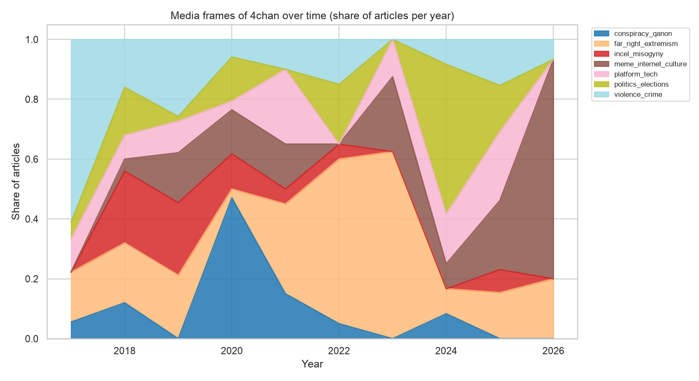
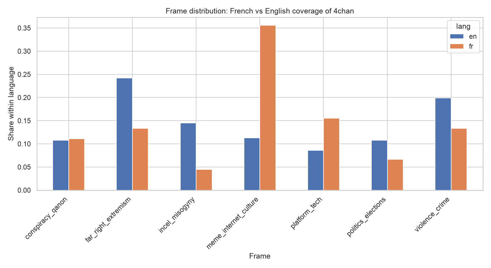

Canuck4Frame — how do Canadian media frame 4chan?
Ten major Canadian outlets, ten years of coverage, one platform. This project measures the media frames that Canadian journalism uses when it writes about 4chan — and asks whether those frames drifted from “meme factory” toward “far-right engine”, and whether Francophone and Anglophone newsrooms tell the same story. Topics are extracted inductively with BERTopic, then coded by hand into frames.
Not what 4chan says — what Canada says about it.
The object of study is media discourse about 4chan, not content produced by 4chan users. Each article is a trace of how a newsroom chose to make the platform legible to a Canadian public.
Which frames structure Canadian coverage of 4chan?
Frames are not assumed in advance. BERTopic clusters the corpus inductively; the resulting topics are then read and coded by hand into a small set of interpretable frames.
Did the dominant frame change between 2017 and 2026?
The expectation is a drift away from an internet-culture reading of 4chan toward an extremism-and-violence reading, tracked as frame share per year.
Do Francophone and Anglophone outlets frame it differently?
Tested with a chi-square test of independence between frame and article language, reported alongside Cramér’s V as an effect size.
Reproducible, parameterised, auditable.
Every parameter lives in a single config.yaml; modelling is seeded; the corpus export and the list of unrecoverable links are both versioned.
Building a corpus that almost didn’t exist.
“4chan” is a niche keyword in Canadian news, and the first data source simply had nothing. Getting to 270 usable articles took a change of database and a detour through the Internet Archive — a methodological result in itself.
GDELT returned zero.
The GDELT DOC 2.0 index contains essentially no “4chan” articles for the target outlets — 0 for cbc.ca, radio-canada.ca, ledevoir.com and tvanouvelles.ca, and roughly four for the whole of Canada. The API also refuses start dates before 2017.
Media Cloud, exported by hand.
The same query on Media Cloud returns 344 indexed articles across the ten outlets. The search is run in the web interface and exported to CSV, which is committed to the repository as the ground truth of the corpus.
Two passes for the article text.
Media Cloud exports metadata only. Bodies are scraped live with trafilatura, browser headers and per-domain rate limiting; whatever hard-fails (paywalls, 404/410, blocks, tarpits) is retried against the Wayback Machine, which recovered 29 articles — including all of TVA Nouvelles, blocked outright on the live web.
344 → 280 → 270.
64 links exist neither online nor in the archive; 10 more are stubs or duplicates removed in preprocessing. The unrecovered URLs are listed in a versioned CSV so the gap is auditable rather than silent.
From CSV export to frame.
Five steps, each runnable and inspectable on its own. Only one of them is human.
Collect
collect.py imports the Media Cloud CSV, fetches each article body, and writes newline-delimited JSON incrementally, so an interrupted run keeps everything already retrieved.
Recover
recover_wayback.py looks up the closest Internet Archive snapshot near each failed article’s publication date and extracts the body from the raw archived page.
Preprocess
preprocess.py strips boilerplate, drops stubs and duplicates, and detects the language of each article rather than assuming it from the outlet — 213 English, 57 French.
Model
modeling.py runs BERTopic over multilingual sentence embeddings (UMAP + HDBSCAN), with English and French stopwords removed at the c-TF-IDF stage and discriminative terms (4chan, meme, incel …) protected.
Code & analyse
The 21 topics are read through their most representative articles and assigned a frame label by hand. visualization.py and stats.py then group by frame to produce the temporal, comparative and inferential results.
Seven frames, 231 coded articles.
BERTopic produced 21 topics and left 39 articles (14 %) as outliers — a low rate for a corpus this small. Related topics were then merged by hand: four separate mass-violence and extremism topics, for instance, collapse into a single frame.
Far-right extremism
Hate symbols on campus, the Pittsburgh and Buffalo shootings, Boogaloo networks, the Capitol insurrection.
Violence & crime
Christchurch and the livestreamed mosque attack, Las Vegas, 8chan as a venue for announcing massacres.
Meme & internet culture
Rumour circulation, online subcultures, and 4chan as a cultural engine — up to the Backrooms film.
Incel & misogyny
The Toronto van attack, the incel movement, and violent misogyny debated as a form of terrorism.
Conspiracy & QAnon
QAnon’s move into mainstream politics and its convergence with COVID-19 health conspiracies.
Platform & tech
Moderation, online-harms regulation, data leaks, and the people who built and fought 8chan.
Politics & elections
Political memes, the Freedom Convoy’s transatlantic networks, and the Trump assassination attempt.
A frame that moves, and a border that shows.
Two findings stand out: Canadian coverage of 4chan does not sit still across the decade, and it does not read the same in French and in English.


What these numbers cannot carry.
Small n, fragile cells
270 articles spread over seven frames, two languages and ten years leaves many cells below five expected observations, which makes the chi-square approximation unreliable. The p-value is reported with that caveat; a Fisher exact test is the natural next step.
Uneven survival by outlet
Retrieval attrition is not random. CBC contributes only 6 articles because its older URLs are poorly archived, while the Toronto Star contributes 78 — so per-outlet comparisons are descriptive, not representative.
Interpretive coding
Frame labels are assigned by a single coder. Inter-annotator agreement on a subsample, with Cohen’s κ, would put the coding scheme on firmer ground.
Thicker French corpus
With only 57 French articles, the most striking finding — the Francophone cultural framing — rests on the thinnest part of the corpus. Recovering the blocked Québec outlets is the priority before the result is written up.